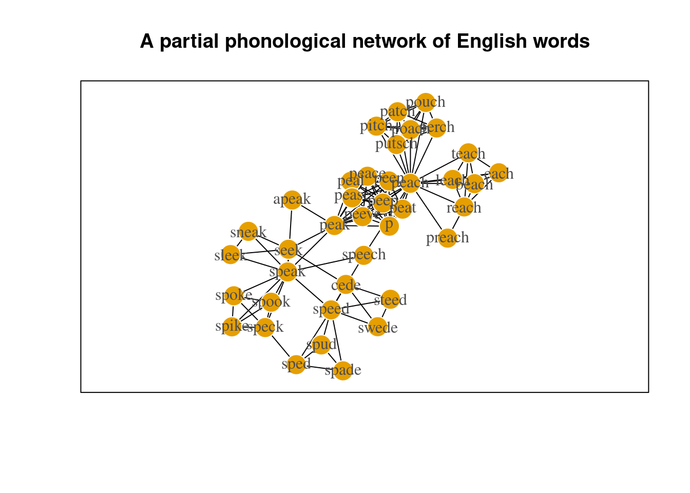
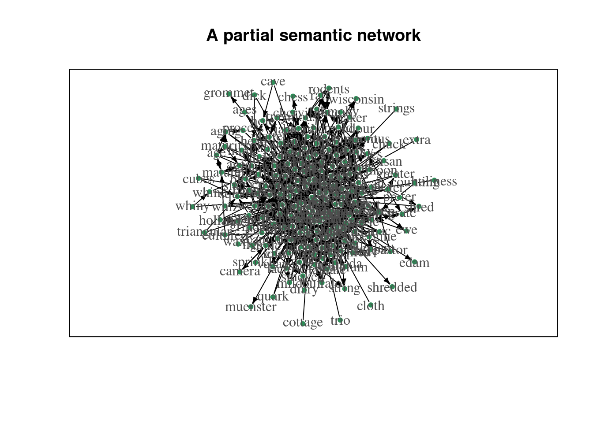
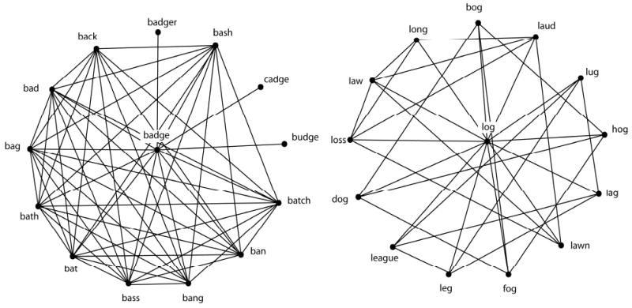
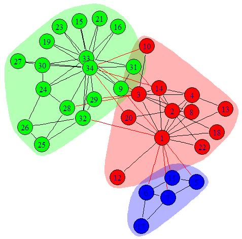
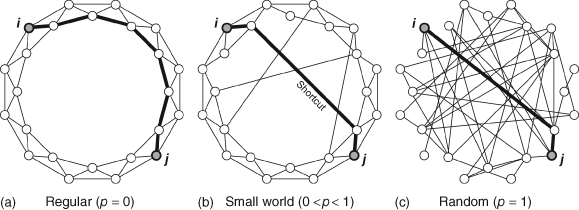
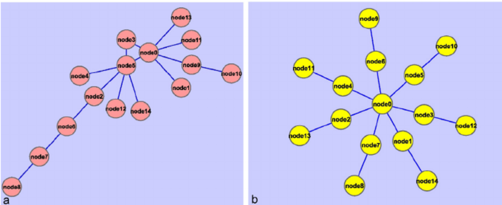

CompCog 2023 Network Analysis Tutorial
Modeling psychological data with cognitive networks
Cynthia Siew
1st Feb 2023
Set up
library(igraph)##
## Attaching package: 'igraph'## The following objects are masked from 'package:stats':
##
## decompose, spectrum## The following object is masked from 'package:base':
##
## unionload('data/example-data-compcog.RData')There should be 3 objects loaded into your R workspace:
pnetsnetpnet_edgelist
pnet refers to a section of the phonological network
first described by Vitevitch (2008). The nodes represent English words,
and edges connect words that are phonological neighbors of each other
based on the 1-edit distance metric computed on their phonological
transcriptions (Luce & Pisoni, 1998). E.g., /k@t/–/k@p/ are
neighboring nodes. Specifically, this network is the 2-hop network of
the word ‘speech’ - in addition to ‘speech’ itself, its immediate
phonological neighbors and the neighbors of its neighbors are included
in this representation.
pnet_edgelist is the raw data that is used to create
pnet. It is an edgelist whereby each row depicts one edge
in the network.
snet refers to a section of the word association network
using data from De Deyne et al. (2020). The nodes represent English
words, and edges connect words that are produced as free associations of
other words. E.g., “cat”–“dog” are neighboring nodes. This network has
edges with 2 interesting properties. (i) Each edge has a
weight attribute that corresponds to the associative
strength of two nodes, or the proportion of participants who provided a
specific response to the cue word. (ii) The edges are also
directed such the direction goes from the cue word
to the response word, i.e., “cat”->“dog”. Specifically, this
network is the 1-hop network of the word ‘cheese’ - in addition to
‘cheese’ itself, its immediate associates and the cue words that led to
the response ‘cheese’ are included in this representation. See https://smallworldofwords.org/en/project/research for
more information.
summary(pnet) # undirected, unweighted edges ## IGRAPH ddad942 UN-- 39 121 --
## + attr: name (v/c)summary(snet) # directed, weighted edges## IGRAPH 9a00b73 DNW- 211 1324 --
## + attr: name (v/c), weight (e/n)Notice the two numbers on the first row: The first tells you the number of nodes or vertices in the network, the second tells you the number of edges or links.
There are also some cyptic looking characters. Let’s unpack that. The first character is either “U” or “D” and tells you whether the edges are “undirected” or “directed”. The second character “N” (if present) tells you that the nodes have “names”. The third character “W” (if present) tells you that the edges are weighted. The final character is blank unless you have a special type of network known as a bipartite network (in which case the fourth character is “B”).
On the second row, additional information about node or edge
attributes can be found if they have been specified in the construction
of the network. Both networks have node names, and the semantic network
has an edge attribute known as weight.
Loading a network into igraph
There are a number of different ways to convert your raw data into a
network representation that igraph can analyze. This data
first needs to be organized as an edgelist or an adjacency matrix or an
adjacency list and then loaded into RStudio. Below I provide a quick
example of how an edgelist can be converted into a
network.
head(pnet_edgelist) # preview first few rows of the edgelist ## [,1] [,2]
## [1,] "biC;beach" "iC;each"
## [2,] "biC;beach" "liC;leach"
## [3,] "iC;each" "liC;leach"
## [4,] "pi;p" "pis;peace"
## [5,] "biC;beach" "piC;peach"
## [6,] "iC;each" "piC;peach"pnet2 <- graph_from_edgelist(pnet_edgelist,
directed = F) # the edges are undirected in this network
summary(pnet2)## IGRAPH 2e75c97 UN-- 39 121 --
## + attr: name (v/c)There are many useful functions in igraph (those that
begin with graph_from_*) for converting various kinds of
datasets into networks. The igraph manual is a good place
to start learning about these functions and their arguments to specify
edge or node attributes of the network. Outside of igraph
you will probably have to spend some time curating and wrangling your
data so that it is in the right formats for igraph.
Visualizations
Here are visualizations of the networks we will play around with today.
plot(pnet,
vertex.frame.color = 'white',
vertex.label.color = 'grey30',
edge.color = 'black',
vertex.label = gsub('[[:print:]]+;', '', V(pnet)$name), # regex to only print the word names and not transcriptions
layout = layout_with_lgl,
frame = TRUE,
margin = c(0,0,0,0),
main = 'A partial phonological network of English words')
plot(snet,
vertex.frame.color = 'white',
vertex.label.color = 'grey30',
edge.color = 'black',
vertex.color = 'seagreen',
vertex.size = 5,
edge.arrow.size = 0.4,
layout = layout_with_graphopt,
frame = TRUE,
margin = c(0,0,0,0),
main = 'A partial semantic network')
Disclaimers
Due to limited time, I assume that you have some familiarity with R and RStudio. A gentle introduction to R programming can be found here: https://psyr.djnavarro.net/
I also choose to not cover in detail a number of important topics
such as how to convert your raw data into an igraph network
object, network visualization in igraph (for a great
introduction to this topic, see https://kateto.net/network-visualization), and other
methods of quantifying the community structure of the network (i.e.,
meso-level). Some of these topics are briefly touched on in a different
tutorial and you can find the materials here: https://vpf-netsci.netlify.app/part2-demo.html
Measuring the network
Once we have a network representation, the tools of network science can be applied to analyze the networks in different ways. In this tutorial we focus on a descriptive analysis of the network and review various network measures that can be used to describe or quantify network structure at three different levels of the network: the micro-level (referring to the local structure and other properties of individual nodes), the meso-level (subgroups or clusters of nodes), and the macro-level (referring to the overall or global structure of the network).

Micro-level (node-level)
Micro-level network measures provide you with information about specific nodes in the network. These are generally known as centrality measures in the network science literature. Centrality is the network scientist’s way of quantifying the relative “importance” of a given node relative to other nodes in the network. There are many different definitions of what counts as “central”, as you will see in the following subsections. There is no single “correct” or “best” metric - which metrics are most useful to you will depend on the nature of the system that you are modeling as well as the network behavior that you interested in.
Degree (unweighted edges)
The degree of node i refers to the number of edges or links connected to that node.
If your network has directed edges, in-degree refers to the number of edges that are going towards the target node, whereas out-degree refers to the number of edges that are going away from the target node.

# undirected network
degree(graph = pnet) # for all nodes in the network## xpik;apeak biC;beach sid;cede iC;each liC;leach pi;p
## 2 5 4 5 5 9
## p@C;patch pis;peace piC;peach pik;peak pil;peal piz;pease
## 6 9 22 12 9 9
## pit;peat pin;peen pip;peep piv;peeve pRC;perch pIC;pitch
## 9 9 9 9 6 6
## poC;poach pWC;pouch priC;preach pUC;putsch riC;reach sik;seek
## 6 6 2 6 6 5
## slik;sleek snik;sneak sped;spade spik;speak spEk;speck spEd;sped
## 3 3 3 11 5 4
## spiC;speech spid;speed spYk;spike spok;spoke spuk;spook sp^d;spud
## 3 8 4 4 4 3
## stid;steed swid;swede tiC;teach
## 3 3 5degree(graph = snet, v = 'cheese') # for a specific node in the network ## cheese
## 231# directed network
degree(graph = snet, v = 'cheese', mode = 'in') # in-degree = incoming edges## cheese
## 185degree(graph = snet, v = 'cheese', mode = 'out') # out-degree = outgoing edges ## cheese
## 46degree(graph = snet, v = 'cheese', mode = 'all') # in-degree + out-degree## cheese
## 231Strength (weighted edges)
The strength of node i refers to the sum of its adjacent edge weights. Only applicable to weighted networks.
strength(graph = snet) |> head(5)## age aged ages aging american
## 0.57 0.55 0.04 0.17 0.36# for directed networks
strength(graph = snet, v = 'age', mode = 'in') # in-degree = incoming edges## age
## 0.38strength(graph = snet, v = 'age', mode = 'out') # out-degree = outgoing edges ## age
## 0.19strength(graph = snet, v = 'age', mode = 'all') # in-degree + out-degree## age
## 0.57Relevant finding in psychology: De Deyne et al. (2019) found that strength (operationalized as association frequency) was superior to, or at least similar to, word frequency as a predictor of lexical decision and semantic decision performance.
Local Clustering Coefficient (unweighted)
The local clustering coefficient, C, of node i measures the ratio of the actual number of edges existing among nodes directly connected to the target node i to the number of all possible edges among these nodes.
C ranges from 0 to 1. When C = 0, none of the neighbors of a target node are neighbors of each other. When C = 1, every neighbor is also a neighbor of all the other neighbors of a target word.
You can think of the local clustering coefficient as providing a measure of the level of interconnectivity among the local neighborhood of the node.

Both words have the same number of neighbors, but different local clustering coefficients.
Relevant finding in psychology: Chan & Vitevitch (2009) showed that words with higher clustering coefficients were responded to more slowly than words with lower clustering coefficient in spoken word recognition tasks (even after controling for the size of the phonological neighborhood.
transitivity(graph = pnet, type = 'local', vids = 'spik;speak') |> round(3) # for a specific node in the network ## [1] 0.218# if you do not specify the vids argument then you get a value for all nodes in the network, ordered by V(pnet)$name A couple of things to note:
It is important to specify
type = localfor local clustering coefficients, as compared to the global clustering coefficient of the entire graph (this is a macro-level measure that we will visit later)Many of these functions contain additional arguments for indicating whether to consider the directionality and weights of the edges. If your graph is undirected and unweighted, these are ignored by default. If your graph is directed and weighted, you can indicate whether to include or exclude this information for the computation of the network measure.
Local Clustering Coefficient (weighted)
If you have a weighted network, you can compute local clustering
coefficients using Barrat et al.’s (2004) generalization of transitivity
to weighted networks by specifying type = 'weighted'. If
your network is unweighted, the generalization will return the
unweighted C (see example of ‘speak’ below).
# weighted network
transitivity(graph = snet, type = 'local', vids = 'cheese') |> round(3) ## [1] 0.043transitivity(graph = snet, type = 'weighted', vids = 'cheese') |> round(3) ## [1] 0.056# unweighted network
transitivity(graph = pnet, type = 'local', vids = 'spik;speak') |> round(3)## [1] 0.218transitivity(graph = pnet, type = 'weighted', vids = 'spik;speak') |> round(3) # no difference with the previous## [1] 0.218Closeness Centrality
Closeness centrality of node i is the inverse of the average of the length of the shortest path between node i and all other nodes in the network. If a node has high closeness centrality, it means that on average, it takes few steps to travel from that node to all other nodes in the network. If a node has low closeness centrality, it means that on average, it takes more steps to travel from that node to all other nodes in the network.
Closeness centrality is commonly viewed as an indicator of the accessibility of a node in the network from all other locations in the network.
 This is a famous network (Krackhardt’s Kite) that nicely illustrates
the differences between degree, closeness, and betweenness
centrality.
This is a famous network (Krackhardt’s Kite) that nicely illustrates
the differences between degree, closeness, and betweenness
centrality.
# closeness centralities for directed networks, ignoring weights
closeness(graph = snet, normalized = T, mode = 'all', weights = NA) |> head() # both in- and out-## age aged ages aging american appetizer
## 0.5060241 0.5072464 0.5023923 0.5060241 0.5134474 0.5121951closeness(graph = snet, normalized = T, mode = 'in', weights = NA) |> head() # only incoming edges considered ## age aged ages aging american appetizer
## 0.6666667 0.6666667 NaN 0.5000000 0.2790698 0.3279743closeness(graph = snet, normalized = T, mode = 'out', weights = NA) |> head() # only outgoing edges considered## age aged ages aging american appetizer
## 0.3380282 0.3503650 0.3317422 0.3333333 0.3520408 0.3650794# weights are considered by default if graph has a weight attribute
closeness(graph = snet, normalized = T, mode = 'all') |> head()## age aged ages aging american appetizer
## 18.46966 14.54294 18.60053 18.48592 19.84877 17.90281Note that closeness centrality can only be meaningfully computed for connected graphs (so that a path exists between any pair of nodes). If there are distinct network components, this means that for some sets of node pairs, the path between them does not exist and closeness cannot be computed. Usually, network scientists focus their analysis on the largest connected component of the network and ignore the smaller connected components (viewed as outliers).
It is typical to have normalized = T so that the values
are normalized with respect to the size of the network. As usual, you
can specify the mode and weights arguments
accordingly if you have directed/weighted networks to get the
corresponding versions of closeness centrality computed. However,
caution is needed as the interpretation of weights in this
context is to interpret them as distances rather than
connection strengths: higher weights = longer distances (From
igraph manual: “If the graph has a weight edge attribute,
then this is used by default. Weights are used for calculating weighted
shortest paths, so they are interpreted as distances.”). It is highly
recommended to read the manual carefully to understand the measures that
are being computed.
Relevant finding in psychology: Siew (2018) showed that the closeness centrality of words in an orthographic similarity network influenced word naming and visual lexical decision performance differently. Words of higher closeness centralities were responded to more quickly in lexical decision, but were named more slowly.
Betweenness Centrality
Betweenness centrality is a measure of the degree to which nodes stand in between each other. A node with a high betweenness centrality is a node that is frequently found in the short paths of other pairs of nodes in the network. In contrast, a node with a low betweenness centrality is a node that is not usually found in the short paths of node pairs. Betweeenness can be viewed as an indicator if whether a node represents a “bottleneck” in the system.
# undirected, unweighted network
betweenness(graph = pnet, normalized = T, weights = NA, directed = F) |> head()## xpik;apeak biC;beach sid;cede iC;each liC;leach pi;p
## 0.00000000 0.00000000 0.01730678 0.00000000 0.00000000 0.00000000# directed, weighted network
betweenness(graph = snet, normalized = T, weights = NULL, directed = T) |> head() # use weight and direction## age aged ages aging american appetizer
## 0.0002050581 0.0009881305 0.0000000000 0.0001367054 0.0103941672 0.0098454470The same considerations (about connected graphs, additional arguments for weighted and directed graphs, normalization, interpretation of weights as distances) from the closeness centrality section applies to this section as well.
Page Rank Centrality
PageRank is a centrality measure developed by Google to rank webpages (the historic paper describing the algorithm can be viewed here). The general idea is that a random walker will traverse the network space and their paths are biased by the link connectivity structure of the network. The random walker restarts the walk after some time (simulating “boredom” of the surfer). The number of visits received by a node provides an indicator of its importance in the network. Intuitively, we expect that nodes have a high PageRank if there are many nodes that point to it, or if there are nodes that point to it that themselves have a high PageRank.
# undirected, unweighted network
page_rank(graph = pnet, directed = F, weights = NA)$vector |> head()## xpik;apeak biC;beach sid;cede iC;each liC;leach pi;p
## 0.01085805 0.02109911 0.02350068 0.02109911 0.02109911 0.02849254# directed, weighted network
page_rank(graph = snet, directed = T, weights = NULL)$vector |> head()## age aged ages aging american appetizer
## 0.0016034240 0.0012433152 0.0007545644 0.0009712994 0.0011928822 0.0008034249The weights and directed arguments can be
adjusted depending on your graph type. It is important to note that the
interpretation of edge weights here is that of “connection strength”
(from igraph manual: “This function interprets edge weights
as connection strengths. In the random surfer model, an edge with a
larger weight is more likely to be selected by the surfer.”). This is
different from the “distance” interpretation of edge weights by
closeness and betweenness.
Relevant finding in psychology: Griffiths et al. (2007) showed that Page Rank centralities of words in a word association network provided good predictions for the words generated by participants in a letter fluency task.
Meso-level (community structure)
A common feature of many real-world networks is that they have community structure. Nodes are considered to be part of the same community if the density of connections among those nodes is relatively higher than the density of connections between nodes from different communities (Newman, 2006).
Modularity, Q, is a measure of the density of links inside communities in relation to the density of links between communities (Fortunato, 2010). Networks with higher Q are said to show strong evidence of community structure.

Communities are depicted in different colors from another famous network: Zachary’s Karate Club Network
How do network scientists “find” communities in networks?
Many community detection methods have been developed by network scientists to detect communities in networks. Each differs in their implementation, and reflects the creator’s implicit definition of what is a community. In this tutorial we go through only one of these methods (Louvain) to demonstrate an example of community detection.
If you are interested to learn more about community detection, check out Fortunato (2010) who provided a comprehensive comparison of various community detection techniques.
Louvain method (“greedy, maximization method”)
The core idea behind this method is that communities are essentially “mergers” of small communities (Blondel et al., 2008), reflecting the self-similar nature of complex networks.
- Each node is assigned to one community such that there are as many communities as there are nodes. Then remove node i from its community and placing it in the community of the neighbor which yields the greatest gain in modularity.
- repeat for all nodes in the network
- A new network is built where nodes are the communities found in the previous phase. Repeat Step 1.
- repeat Step 1 and 2 until it is not possible to further increase the value of Q
set.seed(8)
# run the community detection algorithm
results_louvain <- cluster_louvain(graph = pnet)
# overall results
modularity(results_louvain)## [1] 0.5795028sizes(results_louvain)## Community sizes
## 1 2 3 4 5
## 9 7 8 9 6# specific community membership for each node
cbind(
results_louvain$names,
results_louvain$membership
) ## [,1] [,2]
## [1,] "xpik;apeak" "1"
## [2,] "biC;beach" "2"
## [3,] "sid;cede" "3"
## [4,] "iC;each" "2"
## [5,] "liC;leach" "2"
## [6,] "pi;p" "4"
## [7,] "p@C;patch" "5"
## [8,] "pis;peace" "4"
## [9,] "piC;peach" "2"
## [10,] "pik;peak" "4"
## [11,] "pil;peal" "4"
## [12,] "piz;pease" "4"
## [13,] "pit;peat" "4"
## [14,] "pin;peen" "4"
## [15,] "pip;peep" "4"
## [16,] "piv;peeve" "4"
## [17,] "pRC;perch" "5"
## [18,] "pIC;pitch" "5"
## [19,] "poC;poach" "5"
## [20,] "pWC;pouch" "5"
## [21,] "priC;preach" "2"
## [22,] "pUC;putsch" "5"
## [23,] "riC;reach" "2"
## [24,] "sik;seek" "1"
## [25,] "slik;sleek" "1"
## [26,] "snik;sneak" "1"
## [27,] "sped;spade" "3"
## [28,] "spik;speak" "1"
## [29,] "spEk;speck" "1"
## [30,] "spEd;sped" "3"
## [31,] "spiC;speech" "3"
## [32,] "spid;speed" "3"
## [33,] "spYk;spike" "1"
## [34,] "spok;spoke" "1"
## [35,] "spuk;spook" "1"
## [36,] "sp^d;spud" "3"
## [37,] "stid;steed" "3"
## [38,] "swid;swede" "3"
## [39,] "tiC;teach" "2"Saving the community detection results as a communities
object enables the use of special functions like
modularity() and sizes() to obtain the
modularity of the network and its community sizes. I have also included
code that shows how to extract the community memberships of all nodes in
the network for further analysis. This applies to the other community
detection algorithms as well.
Relevant finding in psychology: Siew (2013) found robust community structure in the phonological network, and words in the same community tended to share similar lexical and phonological properties.
Macro-level (network-level)
In this section, we will review network science measures that describe the overall or global structure of the entire network. You can think of these measures as providing a “bird’s eye view” of your network, and they are useful for comparing different network representations.
Average Shortest Path Length
Average shortest path length (ASPL) refers to the mean of the shortest possible path between all possible pairs of nodes in the network. (This loosely corresponds to the idea of “six degrees of separation” in social networks.)
Example depicting the shortest path between nodes 25 and 16.
# undirected, unweighted network
average.path.length(graph = pnet) ## [1] 2.557355# an alternative function - both give the same result
mean_distance(graph = pnet)## [1] 2.557355# directed, weighted network
mean_distance(graph = snet, weights = NULL, directed = T) # consider weights and direction## [1] 0.1090017mean_distance(graph = snet, weights = NULL, directed = F) # ignore direction ## [1] 0.06239856mean_distance(graph = snet, weights = NA, directed = T) # ignore weights ## [1] 2.926504Relevant finding in psychology: Siew (2018) showed that concept networks (constructed from concept maps generated by students) with larger average shortest path lengths were associated with higher quiz scores, after controlling for network size.
Global Clustering Coefficient
Global clustering coefficient refers to the number of closed triangles in the network relative to the number of possible triangles. It is a measure of overall level of local connectivity among nodes in the network.
A simple way of thinking about this concept is that it is measuring the probability that each pair of “friends” of a given node are also friends with each other.
transitivity(graph = pnet, type = 'global')## [1] 0.6805869transitivity(graph = snet, type = 'global')## [1] 0.1588113Small World Index
The term “small world” has a specific meaning in network science as compared to the layperson’s. A network is considered to have small world characteristics if (i) its ASPL is shorter than that of a randomly generated network with the same number of nodes and edges, and (ii) its global C is larger than that of a randomly generated network with the same number of nodes and edges. There are various ways to compute a value that quantifies the “small worldness” of a network, although we do not cover them here (see Humphries and Gurney, 2008, for an example, and Neal, 2017, for a comparison of different methods).
The main take home message is that a small world network has high levels of local clustering (nodes whose neighbors are also neighbors of each other), but there also exists a number of shortcuts that drastically reduces the overall distances/path lengths between nodes. See below for an illustration of this idea.

Network Density
Network density refers to the ratio of the number of (existing) edges and the number of possible edges among nodes in the network.

Simple example of networks with lower and higher network densities.
graph.density(graph = pnet)## [1] 0.1632928graph.density(graph = snet)## [1] 0.02988039Network Diameter
Network diameter refers to length of the longest shortest path between nodes in the network. Instead of getting the mean of all the shortest paths as you did in ASPL, what is the maximum length of those short paths?

Simple example of networks with higher and lower network diameters
# undirected, unweighted graph
diameter(graph = pnet)## [1] 4# directed, weighted graph
diameter(graph = snet, directed = T, weights = NULL) # consider weights and direction## [1] 0.88diameter(graph = snet, directed = F, weights = NULL) # ignore direction ## [1] 0.56diameter(graph = snet, directed = T, weights = NA) # ignore weights ## [1] 7Additional Resources
Ognyanova, K. (2021) Network visualization with R. Retrieved from www.kateto.net/network-visualization. https://kateto.net/network-visualization
The official igraph manual (v.1.3.4). https://igraph.org/r/doc/
Gephi: A multi-platform, free to download GUI app for network analysis and visualization. https://gephi.org/
References
Barrat, A., Barthélemy, M., Pastor-Satorras, R., & Vespignani, A. (2004). The architecture of complex weighted networks. Proceedings of the National Academy of Sciences, 101(11), 3747–3752. https://doi.org/10.1073/pnas.0400087101
Blondel, V. D., Guillaume, J. L., Lambiotte, R., & Lefebvre, E. (2008). Fast unfolding of communities in large networks. Journal of Statistical Mechanics: Theory and Experiment, 2008(10), P10008.
Chan, K. Y., & Vitevitch, M. S. (2009). The influence of the phonological neighborhood clustering coefficient on spoken word recognition. Journal of Experimental Psychology: Human Perception and Performance, 35(6), 1934–1949. https://doi.org/10.1037/a0016902
De Deyne, S., Navarro, D. J., Perfors, A., Brysbaert, M., & Storms, G. (2019). The “Small World of Words” English word association norms for over 12,000 cue words. Behavior Research Methods, 51, 987–1006.
Fortunato, S. (2010). Community detection in graphs. Physics Reports, 486(3-5), 75-174.
Humphries, M. D., & Gurney, K. (2008). Network ‘small-world-ness’: A quantitative method for determining canonical network equivalence. PloS One, 3(4).
Griffiths, T. L., Steyvers, M., & Firl, A. (2007). Google and the Mind: Predicting Fluency With PageRank. Psychological Science, 18(12), 1069–1076. https://doi.org/10.1111/j.1467-9280.2007.02027.x
Luce, P. A., & Pisoni, D. B. (1998). Recognizing spoken words: The Neighborhood Activation Model. Ear and Hearing, 19(1), 1–36.
Neal, Z. P. (2017). How small is it? Comparing indices of small worldliness. Network Science, 5(1), 30–44. https://doi.org/10.1017/nws.2017.5
Newman, M. E. (2006). Modularity and community structure in networks. Proceedings of the National Academy of Sciences, 103(23), 8577-8582.
Siew, C. S. Q. (2013). Community structure in the phonological network. Frontiers in Psychology, 4, 553.
Siew, C. S. Q. (2018). The orthographic similarity structure of English words: Insights from network science. Applied Network Science, 3(1), 13.
Siew, C. S. Q. (2018). Using network science to analyze concept maps of psychology undergraduates. Applied Cognitive Psychology.
Vitevitch, M. S. (2008). What can graph theory tell us about word learning and lexical retrieval? Journal of Speech, Language, and Hearing Research, 51(2), 408–422. https://doi.org/10.1044/1092-4388(2008/030)
Copyright © 2023 CSQ Siew. All rights reserved.

This work is licensed under a Creative Commons Attribution-NonCommercial-ShareAlike 4.0 International License.